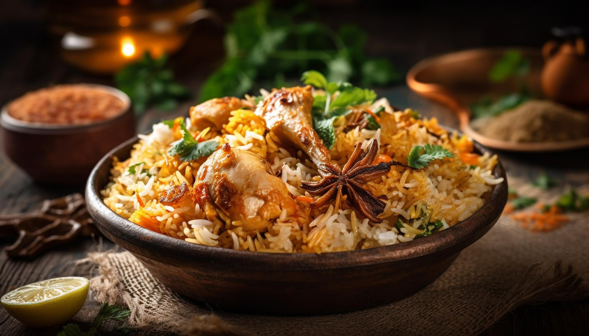

Chicken Biriyani

Description
Chicken biryani is a complete meal in itself, enjoyed by people across different cultures.
It can be accompanied by raita (yogurt with spices), salad, or a side of curry.
The regional variations in biryani recipes add to the diversity and richness of this beloved dish.
Ingredients
- Chicken: Typically, bone-in pieces of chicken, such as thighs or drumsticks, are used.
- Basmati Rice: Long-grain basmati rice is preferred for its distinct aroma and fluffy texture.
- Spices: A variety of spices are used, including cumin, coriander, cardamom, cinnamon, cloves, and bay leaves.
- Yogurt: It adds a creamy texture and helps in tenderizing the chicken.
- Onions: Sliced onions are often caramelized to add sweetness and color.
- Tomatoes: Tomatoes are used to add a tangy flavor to the dish.
- Ginger-Garlic Paste: A paste made from fresh ginger and garlic adds depth to the flavor.
- Mint and Cilantro: Fresh herbs are used to enhance the aroma and freshness of the biryani.
- Ghee or Oil: Ghee (clarified butter) or oil is used for cooking and flavor.
Steps
- Marination: The chicken pieces are marinated in a mixture of yogurt,
ginger-garlic paste, and a blend of spices.
This helps in infusing flavors and tenderizing the chicken.
- Rice Preparation: The basmati rice is soaked, and then partially cooked.
This partially cooked rice is known as "parboiled" rice.
- Layering: The biryani is assembled in layers. First, a layer of partially cooked rice is spread at the bottom of the cooking pot.
Then, marinated chicken is placed on top. This process is repeated to create layers.
- Caramelized Onions: Sliced onions are caramelized until golden brown and crispy. These are used as a topping for the biryani.
- Dum Cooking: The assembled biryani is then cooked in a sealed pot over low heat. This cooking technique, known as "dum" cooking,
allows the flavors to meld, and the chicken and rice to cook together slowly.
- Garnishing: The biryani is often garnished with chopped mint and cilantro, and sometimes with fried onions and a drizzle of ghee.